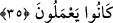
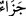

karanlığın geldiği bir fecr-i kâzib gibidir.
34. Onlar için Rableri yanında diledikleri her şey vardır. İşte bu, iyilik edenlerin
mükâfâtıdır.
Dünyadaki güzel amellerine karşılık “Onlar için” yâni muttakîlere “Rableri yanında
diledikleri her şey vardır.” Yâni onlar için sadece cennette değil âhirette faydaların
celbi ve zararların uzaklaştırılması gibi diledikleri her şey vardır. Çünkü onların
günahlarının bağışlanması ile en büyük korkudan ve diğer kıyamet gününün
korkularından emin olmaları, cennete girmezden evvel gerçekleşecektir.
Denilir ki: Cennet nimetlerini ifâde eden en toplu ifâde: “Onlar için Rableri yanında
diledikleri her şey vardır.” ifâdesidir. Âhiret azâbı hakkında en toplu ifâde ise
“Onlarla arzuladıkları şeyler arasına perde çekilmiştir” (Sebe, 34/54) ifâdesidir.
et-Te’vîlâtü’n-Necmiyye’de der ki: “Onlar için Rableri yanında diledikleri her şey
vardır.” Çünkü onlar Allah dışındaki tüm varlıklardan (mâsivâ) sakınıp Allah’a
sığınarak (ittikâ) O’na yaklaşmışlardır. Allah da güzel istîdâdlarına göre diledikleri her
şeyi kendi katından vererek onlara yaklaşmayı kendi cömerdlik uhdesine almıştır.”
“İşte bu,” yâni onların diledikleri her şeyi elde etmeleri “iyilik edenlerin
mükâfâtıdır.” Amellerini Hakk’ı müşâhede üzere yapmak sûretiyle güzelleştirenlerin
ödülü budur.
35. Böylece Allah, onların geçmişte yaptıkları en kötü hareketleri bile örtecek ve
yaptıklarının en güzeline denk olarak mükâfatlarını verecektir.
“Böylece Allah, onların geçmişte yaptıkları en kötü hareketleri bile örtecek”
Râğıb der ki: “
” suçu/günahı örten şeydir. Yemin, katil ve zıhâr keffâreti bu
anlamdadır. “
” ise suçu sanki daha önce hiç işlenmemiş gibi örtüp gizlemek
demektir. “
” hastalığı gidermek mânâsına olduğu gibi “
”in de küfrü ve
nankörlüğü gidermek mânâsına olması mümkündür.”
Âyetin başındaki “lâm” harfi önceki âyetteki “
” bağlıdır. Yâni ‘Allah’ın,
kötülüklerini gizleyip örtmesi için güzel davrananlar’ demektir. Ya da “
” kelimesine
bağlıdır. ‘Kötülüklerini gizleyip örtmek için işte onların mükâfâtı budur.’ demektir.